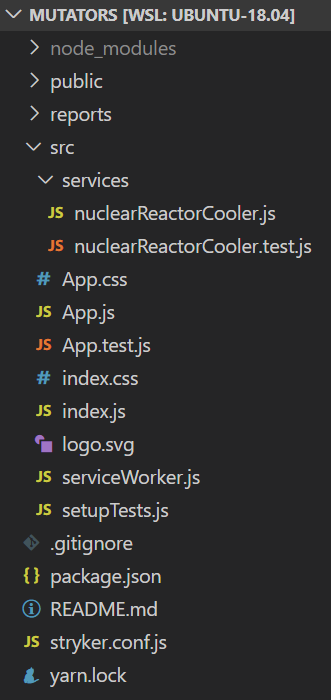
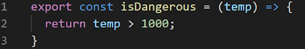
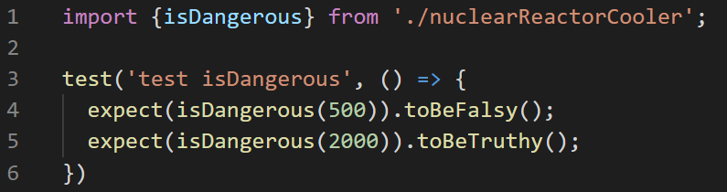

Влад Момотов
Ruby, JS Developer
vladislav.momatau
live:vlad.momotov
test('wow such a test', () => {
expect(true).toBeTruthy();
})
test('wow such a test', () => {
const mockService = jest.fn((a, b) => a + b)
expect(mockService(2, 2)).toEqual(4)
})
const isEverythingOk = (ok) => {
if (ok) {
return true;
} else {
throw "I CAN'T HANDLE IT"
}
}
test('isEverythingOk', () => {
expect(isEverythingOk(true)).toBeTruthy();
})
const isEverythingOk = (ok) => {
if (ok) {
return true;
} else {
throw "I CAN'T HANDLE IT"
}
}
test('isEverythingOk', () => {
expect(isEverythingOk(true)).toBeTruthy();
expect(() => { isEverythingOk(false) }).toThrowError("I CAN'T HANDLE IT")
})
Make Unit Tests Reliable again

export const isDangerous = (temp) => {
if (temp < 10_000) {
return temp > 1000;
} else {
throw "TOO HOT!"
}
}
test('isDangerous', () => {
expect(isDangerous(1000)).toBeFalsy();
expect(isDangerous(2000)).toBeTruthy();
})
-------------------------|----------|----------|----------|----------|-------------------|
File | % Stmts | % Branch | % Funcs | % Lines | Uncovered Line #s |
-------------------------|----------|----------|----------|----------|-------------------|
All files | 75 | 50 | 100 | 75 | |
nuclearReactorCooler.js | 75 | 50 | 100 | 75 | 5 |
-------------------------|----------|----------|----------|----------|-------------------|
Мутационное тестирование не тестирует ваш код.
Оно помогает найти код непокрытый тестами.





//stryker.conf.js
module.exports = {
comment:
"This config was generated using a preset. Please see the handbook for more information: https://github.com/stryker-mutator/stryker-handbook/blob/master/stryker/guides/react.md#react",
mutate: ["src/services/**/*.js?(x)", "!src/**/*@(.test|.spec|Spec).js?(x)"],
mutator: "javascript",
testRunner: "jest",
reporters: ["progress", "clear-text", "html"],
coverageAnalysis: "off",
jest: {
projectType: "create-react-app",
},
};
export const isDangerous = (temp) => {
return temp > 1000;
}
export const isDangerous = (temp) => {
return temp >= 1000;
}
export const isDangerous = (temp) => {
return false;
}
export const isDangerous = (temp) => {
return ""
}
Наша задача - писать такие тесты, чтобы мутанты не выживали.